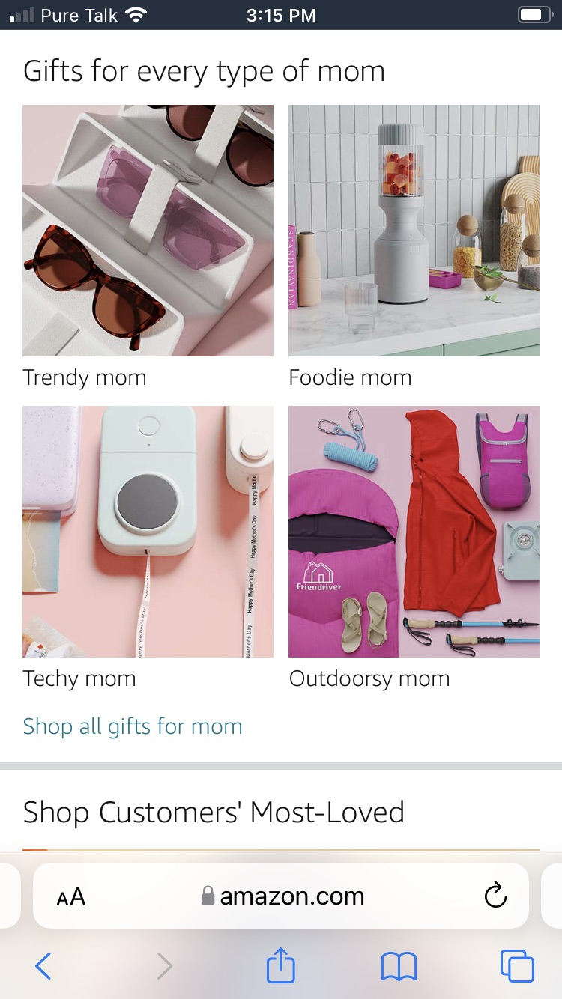
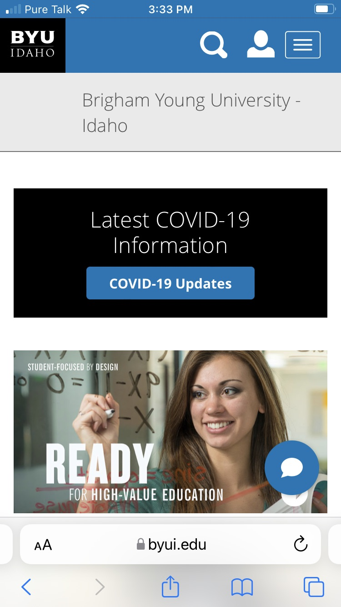

White Space and Clean Design
Amazon
https://www.amazon.com/ In this example you can see Amazon's homepage. This popular commerce site uses white space to diffrentiate products and catagories. This allows the user to clearly see and navigate through each object regardless of how large or small the veiwport is.
Contrast
United Airlines
https://www.united.com/en/us/United Airline's uses a color pallete of blue, white and black. These colors stand out well against each other. For instance, white lettering on a dark blue background stands out very well and draws your eyes to the words. One good example of this in use comes from the desktop version, as the mobile version cuts this out. In this multiple services are offered on the main page, but are selected via tabs allowing the forms to be in the same place. This form uses white as the primary background, black for the font and blue to designate which active tab is being used. This set up allows you to quickly discover what is going on.
Visual Hierarchy
Brigham Young University Idaho
https://www.byui.edu/online BYUI's homepage demonstrates the principle of visual hierarchy. Here you can see the nav bar featuring student login and more at the very top which allows users to navigate to these services quickly. This is followed by an image and link to COVID information, a major source of concern for the last few years. The rest of the page consists of news stories and more critical information a visitor might want to know. For instance, the contact portion is located at the bottom of the page as is standard for information of that type, allowing users to locate it quickly.